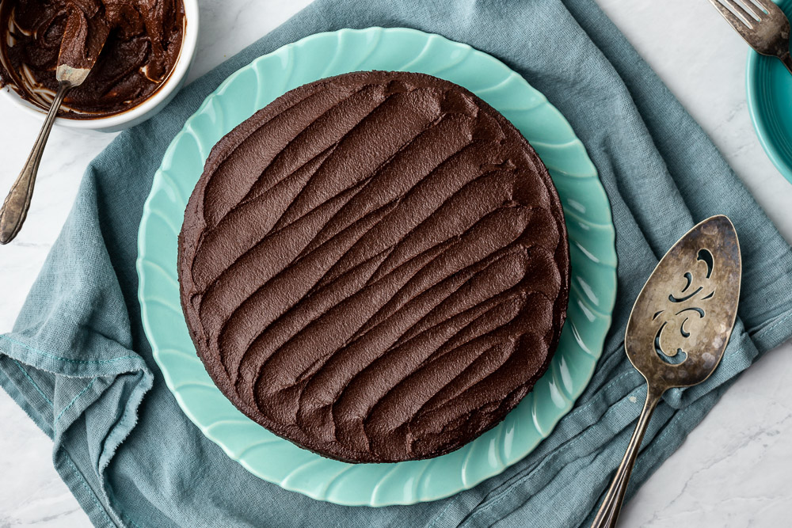

Chocolate Cake

Description
A one bowl chocolate cake recipe that is quick, easy, and delicious! It only takes a few
minutes to prepare the batter, before you can frost with your favorite chocolate frosting.
Ingredients
- 2 cups white sugar
- 1 ¾ cups all-purpose flour
- ¾ cup unsweetened cocoa powder
- 1 ½ teaspoons baking powder
- 1 ½ teaspoons baking soda
- 1 teaspoon salt
- 2 eggs
- 1 cup milk
- ½ cup vegetable oil
- 2 teaspoons vanilla extract
- 1 cup boiling water
Directions
- Preheat oven to 350 degrees F (175 degrees C). Grease and flour two nine inch round pans.
- In a large bowl, stir together the sugar, flour, cocoa, baking powder, baking soda and salt.
- Add the eggs, milk, oil and vanilla, mix for 2 minutes on medium speed of mixer.
- Stir in the boiling water last. Batter will be thin.
- Pour evenly into the prepared pans.
- Bake 30 to 35 minutes in the preheated oven, until the cake tests done with a toothpick. Cool in the
pans for 10 minutes, then remove to a wire rack to cool completely.